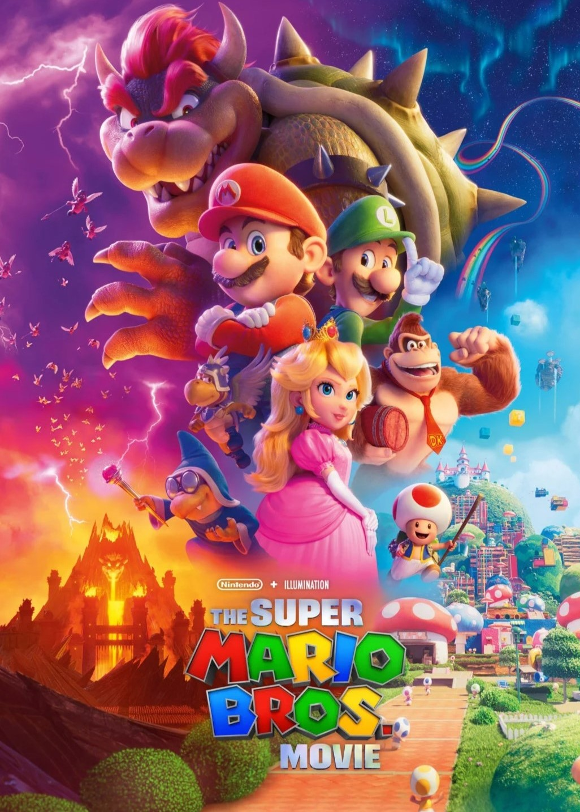

O filme Super Mario Bros. (2023) é uma animação cheia de energia e nostalgia, baseada no icônico personagem dos videogames criado pela Nintendo. A história segue Mario e seu irmão Luigi, dois encanadores que acabam sendo transportados para o Reino dos Cogumelos, onde enfrentam o vilão Bowser para salvar a Princesa Peach e restaurar a paz. Com visuais vibrantes, cenas de ação empolgantes e referências aos jogos clássicos, o filme agrada tanto os fãs de longa data quanto os novos espectadores. A dublagem de Chris Pratt como Mario e Jack Black como Bowser também chamou a atenção, trazendo um toque de humor e carisma aos personagens. É uma aventura divertida e cheia de ação, perfeita para fãs de todas as idades.